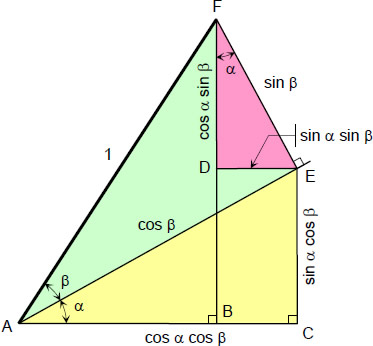

16 Trigonometric functions
#| output: false
#| echo: false
## Formatting options are included here; not in CalculusWithJulia.WeaveSupport
using QuizQuestions
nothing#| output: false
#| echo: false
fig_size=(800, 600)
nothing#| output: false
#| echo: false
import Logging
Logging.disable_logging(Logging.Info) # or e.g. Logging.Info
Logging.disable_logging(Logging.Warn)
nothing#| eval: false
#| echo: false
import SymPy
function Base.show(io::IO, ::MIME"text/html", x::T) where {T <: SymPy.SymbolicObject}
println(io, "<span class=\"math-left-align\" style=\"padding-left: 4px; width:0; float:left;\"> ")
println(io, "\\[")
println(io, sympy.latex(x))
println(io, "\\]")
println(io, "</span>")
end
#| output: false
#| echo: false
# ImageFile
## WeaveSupport from CalculusWithJulia package
## moved here to lighten up CwJ package
import Base64: base64encode
import Markdown
using Mustache
using Tables
# q and L
using LaTeXStrings
macro q_str(x)
"`$x`"
end
"""
Take an image file and encode it
## Examples
ImageFile("http://...", "caption")
ImageFile("/fullpath/to_file/", "caption")
ImageFile(:integrals, "figures/pic.png", "caption")
ImageFile(p, "caption") # p a Plot object
"""
mutable struct ImageFile
f
caption
alt
width
content
end
# 2 args f, caption
ImageFile(f,caption=""; alt="A Figure", width=nothing) = ImageFile(f, caption, alt, width)
# 3 args dir, f, caption
function ImageFile(dir::Symbol, f::AbstractString, caption;
alt="A Figure", width=nothing)
basedir = replace(dirname(@__DIR__), "/src" => "")
#fname = joinpath(basedir, "CwJ", string(dir), f)
fname = joinpath(basedir, string(dir), f)
ImageFile(fname, caption, alt, width)
end
# plot -> string for file
function ImageFile(f, caption, alt, width)
imgfile = tempname() * ".gif"
io = open(imgfile, "w")
show(io, "image/png", f)
close(io)
ImageFile(imgfile, caption, alt, width)
end
gif_to_img_tpl = Mustache.mt"""
<img src="data:image/gif;base64,{{{:data}}}" class="card-img-top" alt="{{{:alt}}}">
"""
function ImageFile(f::AbstractString, caption, alt, width)
fcontent = occursin(r"^http", f) ? read(download(f), String) : read(f, String)
data = base64encode(fcontent)
content = Mustache.render(gif_to_img_tpl, data=data, alt=alt)
ImageFile(f, caption, alt, width, content)
end
function Base.show(io::IO, m::MIME"text/html", x::ImageFile)
content = x.content
if content == nothing
data = (read(x.f, String))
content = gif_to_image(data=data, alt="figure")
end
caption = (Markdown.html ∘ Markdown.parse)(x.caption)
print(io, """<div class="d-flex justify-content-center">""")
print(io, " <figure>")
print(io, content)
print(io, " <figcaption>")
print(io, caption)
print(io, """
</figcaption>
</figure>
</div>
""")
end
import TextWrap
function Base.show(io::IO, m::MIME"text/plain", x::ImageFile)
caption = (TextWrap.wrap ∘ Markdown.plain ∘ Markdown.parse)(x.caption)
println(io, """
---------------------------------
|
| see online version for |
| image |
| |
--------------------------------
""")
println(io, caption)
return nothing
end
# hack to work around issue
# import Markdown
# import CalculusWithJulia
# function CalculusWithJulia.WeaveSupport.ImageFile(d::Symbol, f::AbstractString, caption; kwargs...)
# nm = joinpath("..", string(d), f)
# u = ""
# Markdown.parse(u)
# end
# Table
#| echo: false
#https://github.com/TheRoniOne/MDTable.jl/blob/master/src/write.jl
function MDTable(io::IO, df)
rows = Tables.rows(df)
sch = Tables.schema(rows)
names = Tables.columnnames(rows)
header = true
headers::String = ""
for i in 1:length(names)
if i != length(names)
headers = headers * "| $(names[i]) "
else
headers = headers * "| $(names[i]) " * "|\n"
end
end
print(io, headers)
println(io, "| --- " ^ length(names) * "|")
for row in rows
line::String = ""
Tables.eachcolumn(sch, row) do val, i, nm
print(io, "| ", chomp(string(val)))
end
println(io, "|")
end
end
Table(d) = Markdown.parse(sprint(io -> MDTable(io, d)))
table(d) = Table(d)
# HTMLoutput
struct HTMLoutput
x
centered::Bool
caption::String
HTMLoutput(x; centered::Bool=false, caption::String="") = new(x, centered, caption)
end
function Base.show(io::IO, ::MIME"text/html", x::HTMLoutput)
if !x.centered
txt = x.x
else
centered_content_tpl = """
<div class="d-flex justify-content-center">
<div class="card border-light mx-3 px-3 my-3 py-3" style="{{#:width}}width={{:width}}px{{/:width}}{{^:width}} max-width: 560px;{{/:width}}">
{{{:content}}}
<div class="card-footer text-muted">
{{{:caption}}}
</div>
</div>
</div>
"""
txt = Mustache.render(centered_content_tpl; content=x.x, caption=x.caption)
end
print(io, txt)
end
function Base.show(io::IO, m::MIME"text/plain", x::HTMLoutput)
caption = (TextWrap.wrap ∘ Markdown.plain ∘ Markdown.parse)(x.caption)
println(io, "Content available in online version")
println(io, caption)
return nothing
end
nothingThis section uses the following add-on packages:
using CalculusWithJulia
using Plots
plotly()
using SymPyWe have informally used some of the trigonometric functions in examples so far. In this section we quickly review their definitions and some basic properties.
The trigonometric functions are used to describe relationships between triangles and circles as well as oscillatory motions. With such a wide range of utility it is no wonder that they pop up in many places and their origins date to Hipparcus and Ptolemy over \(2000\) years ago.
16.1 The 6 basic trigonometric functions
We measure angles in radians, where \(360\) degrees is \(2\pi\) radians. By proportions, \(180\) degrees is \(\pi\) radian, \(90\) degrees is \(\pi/2\) radians, \(60\) degrees is \(\pi/3\) radians, etc. In general, \(x\) degrees is \(2\pi \cdot x / 360\) radians (or, with cancellation, \(x \cdot \frac{\pi}{180}\)).
For a right triangle with angles \(\theta\), \(\pi/2 - \theta\), and \(\pi/2\) (\(0 < \theta < \pi/2\)) we call the side opposite \(\theta\) the “opposite” side, the shorter adjacent side the “adjacent” side and the longer adjacent side the hypotenuse.
#| hide: true
#| echo: false
p = plot(legend=false, xlim=(-1/4,5), ylim=(-1/2, 3),
xticks=nothing, yticks=nothing, border=:none)
plot!([0,4,4,0],[0,0,3,0], linewidth=3)
del = .25
plot!([4-del, 4-del,4], [0, del, del], color=:black, linewidth=3)
annotate!([(.75, .25, "θ"), (4.0, 1.25, "opposite"), (2, -.25, "adjacent"), (1.5, 1.25, "hypotenuse")])With these, the basic definitions for the primary trigonometric functions are
\[\begin{align*} \sin(\theta) &= \frac{\text{opposite}}{\text{hypotenuse}} &\quad(\text{the sine function})\\ \cos(\theta) &= \frac{\text{adjacent}}{\text{hypotenuse}} &\quad(\text{the cosine function})\\ \tan(\theta) &= \frac{\text{opposite}}{\text{adjacent}}. &\quad(\text{the tangent function}) \end{align*}\]
Many students remember these through SOH-CAH-TOA.
Some algebra shows that \(\tan(\theta) = \sin(\theta)/\cos(\theta)\). There are also \(3\) reciprocal functions, the cosecant, secant and cotangent.
These definitions in terms of sides only apply for \(0 \leq \theta \leq \pi/2\). More generally, if we relate any angle taken in the counter clockwise direction for the \(x\)-axis with a point \((x,y)\) on the unit circle, then we can extend these definitions - the point \((x,y)\) is also \((\cos(\theta), \sin(\theta))\).
#| hold: true
#| echo: false
#| cache: true
## {{{radian_to_trig}}}
gr()
function plot_angle(m)
r = m*pi
ts = range(0, stop=2pi, length=100)
tit = "$m ⋅ pi -> ($(round(cos(r), digits=2)), $(round(sin(r), digits=2)))"
p = plot(cos.(ts), sin.(ts), legend=false, aspect_ratio=:equal,title=tit)
plot!(p, [-1,1], [0,0], color=:gray30)
plot!(p, [0,0], [-1,1], color=:gray30)
if r > 0
ts = range(0, stop=r, length=100)
else
ts = range(r, stop=0, length=100)
end
plot!(p, (1/2 .+ abs.(ts)/10pi).* cos.(ts), (1/2 .+ abs.(ts)/10pi) .* sin.(ts), color=:red, linewidth=3)
l = 1 #1/2 + abs(r)/10pi
plot!(p, [0,l*cos(r)], [0,l*sin(r)], color=:green, linewidth=4)
scatter!(p, [cos(r)], [sin(r)], markersize=5)
annotate!(p, [(1/4+cos(r), sin(r), "(x,y)")])
p
end
## different linear graphs
anim = @animate for m in -4//3:1//6:10//3
plot_angle(m)
end
imgfile = tempname() * ".gif"
gif(anim, imgfile, fps = 1)
caption = "An angle in radian measure corresponds to a point on the unit circle, whose coordinates define the sine and cosine of the angle. That is ``(x,y) = (\\cos(\\theta), \\sin(\\theta))``."
plotly()
ImageFile(imgfile, caption)16.1.1 The trigonometric functions in Julia
Julia has the \(6\) basic trigonometric functions defined through the functions sin, cos, tan, csc, sec, and cot.
Two right triangles - the one with equal, \(\pi/4\), angles; and the one with angles \(\pi/6\) and \(\pi/3\) can have the ratio of their sides computed from basic geometry. In particular, this leads to the following values, which are usually committed to memory:
\[\begin{align*} \sin(0) &= 0, \quad \sin(\pi/6) = \frac{1}{2}, \quad \sin(\pi/4) = \frac{\sqrt{2}}{2}, \quad\sin(\pi/3) = \frac{\sqrt{3}}{2},\text{ and } \sin(\pi/2) = 1\\ \cos(0) &= 1, \quad \cos(\pi/6) = \frac{\sqrt{3}}{2}, \quad \cos(\pi/4) = \frac{\sqrt{2}}{2}, \quad\cos(\pi/3) = \frac{1}{2},\text{ and } \cos(\pi/2) = 0. \end{align*}\]
Using the circle definition allows these basic values to inform us of values throughout the unit circle.
These all follow from the definition involving the unit circle:
- If the angle \(\theta\) corresponds to a point \((x,y)\) on the unit circle, then the angle \(-\theta\) corresponds to \((x, -y)\). So \(\sin(\theta) = - \sin(-\theta)\) (an odd function), but \(\cos(\theta) = \cos(-\theta)\) (an even function).
- If the angle \(\theta\) corresponds to a point \((x,y)\) on the unit circle, then rotating by \(\pi\) moves the points to \((-x, -y)\). So \(\cos(\theta) = x = - \cos(\theta + \pi)\), and \(\sin(\theta) = y = -\sin(\theta + \pi)\).
- If the angle \(\theta\) corresponds to a point \((x,y)\) on the unit circle, then rotating by \(\pi/2\) moves the points to \((-y, x)\). So \(\cos(\theta) = x = \sin(\theta + \pi/2)\).
The fact that \(x^2 + y^2 = 1\) for the unit circle leads to the “Pythagorean identity” for trigonometric functions:
\[ \sin(\theta)^2 + \cos(\theta)^2 = 1. \]
This basic fact can be manipulated many ways. For example, dividing through by \(\cos(\theta)^2\) gives the related identity: \(\tan(\theta)^2 + 1 = \sec(\theta)^2\).
Julia’s functions can compute values for any angles, including these fundamental ones:
[cos(theta) for theta in [0, pi/6, pi/4, pi/3, pi/2]]These are floating point approximations, as can be seen clearly in the last value. Symbolic math can be used if exactness matters:
cos.([0, PI/6, PI/4, PI/3, PI/2])The sincos function computes both sin and cos simultaneously, which can be more performant when both values are needed.
sincos(pi/3)For really large values, round off error can play a big role. For example, the exact value of \(\sin(1000000 \pi)\) is \(0\), but the returned value is not quite \(0\) sin(1_000_000 * pi) = -2.231912181360871e-10. For exact multiples of \(\pi\) with large multiples the sinpi and cospi functions are useful.
(Both functions are computed by first employing periodicity to reduce the problem to a smaller angle. However, for large multiples the floating-point roundoff becomes a problem with the usual functions.)
Example
Measuring the height of a tree may be a real-world task for some, but a typical task for nearly all trigonometry students. How might it be done? If a right triangle can be formed where the angle and adjacent side length are known, then the opposite side (the height of the tree) can be solved for with the tangent function. For example, if standing \(100\) feet from the base of the tree the tip makes a \(15\) degree angle the height is given by:
#| hold: true
theta = 15 * pi / 180
adjacent = 100
opposite = adjacent * tan(theta)Having some means to compute an angle and then a tangent of that angle handy is not a given, so the linked to article provides a few other methods taking advantage of similar triangles.
You can also measure distance with your thumb or fist. How? The fist takes up about \(10\) degrees of view when held straight out. So, pacing off backwards until the fist completely occludes the tree will give the distance of the adjacent side of a right triangle. If that distance is \(30\) paces what is the height of the tree? Well, we need some facts. Suppose your pace is \(3\) feet. Then the adjacent length is \(90\) feet. The multiplier is the tangent of \(10\) degrees, or:
tan(10 * pi/180)Which for sake of memory we will say is \(1/6\) (a \(5\) percent error). So that answer is roughly \(15\) feet:
30 * 3 / 6Similarly, you can use your thumb instead of your fist. To use your fist you can multiply by \(1/6\) the adjacent side, to use your thumb about \(1/30\) as this approximates the tangent of \(2\) degrees:
1/30, tan(2*pi/180)This could be reversed. If you know the height of something a distance away that is covered by your thumb or fist, then you would multiply that height by the appropriate amount to find your distance.
16.1.2 Basic properties
The sine function is defined for all real \(\theta\) and has a range of \([-1,1]\). Clearly as \(\theta\) winds around the \(x\)-axis, the position of the \(y\) coordinate begins to repeat itself. We say the sine function is periodic with period \(2\pi\). A graph will illustrate:
plot(sin, 0, 4pi)The graph shows two periods. The wavy aspect of the graph is why this function is used to model periodic motions, such as the amount of sunlight in a day, or the alternating current powering a computer.
From this graph - or considering when the \(y\) coordinate is \(0\) - we see that the sine function has zeros at any integer multiple of \(\pi\), or \(k\pi\), \(k\) in \(\dots,-2,-1, 0, 1, 2, \dots\).
The cosine function is similar, in that it has the same domain and range, but is “out of phase” with the sine curve. A graph of both shows the two are related:
plot(sin, 0, 4pi, label="sin")
plot!(cos, 0, 4pi, label="cos")The cosine function is just a shift of the sine function (or vice versa). We see that the zeros of the cosine function happen at points of the form \(\pi/2 + k\pi\), \(k\) in \(\dots,-2,-1, 0, 1, 2, \dots.\)
The tangent function does not have all \(\theta\) for its domain, rather those points where division by \(0\) occurs are excluded. These occur when the cosine is \(0\), or, again, at \(\pi/2 + k\pi\), \(k\) in \(\dots,-2,-1, 0, 1, 2, \dots.\) The range of the tangent function will be all real \(y\).
The tangent function is also periodic, but not with period \(2\pi\), but rather just \(\pi\). A graph will show this. Here we avoid the vertical asymptotes using rangeclamp:
plot(rangeclamp(tan), -10, 10, label="tan")Example sums of sines
For the function \(f(x) = \sin(x)\) we have an understanding of the related family of functions defined by linear transformations:
\[ g(x) = a + b \sin((2\pi n)x) \]
That is \(g\) is shifted up by \(a\) units, scaled vertically by \(b\) units and has a period of \(1/n\). We see a simple plot here where we can verify the transformation:
g(x; b=1,n=1) = b*sin(2pi*n*x)
g1(x) = 1 + g(x, b=2, n=3)
plot(g1, 0, 1)We can consider the sum of such functions, for example
g2(x) = 1 + g(x, b=2, n=3) + g(x, b=4, n=5)
plot(g2, 0, 1)Though still periodic, we can see with this simple example that sums of different sine functions can have somewhat complicated graphs.
Sine functions can be viewed as the x position of a point traveling around a circle so g(x, b=2, n=3) is the x position of point traveling around a circle of radius \(2\) that completes a circuit in \(1/3\) units of time.
The superposition of the two sine functions that g2 represents could be viewed as the position of a circle moving around a point that is moving around another circle. The following graphic, with \(b_1=1/3, n_1=3, b_2=1/4\), and \(n_2=4\), shows an example that produces the related cosine sum (moving right along the \(x\) axis), the sine sum (moving down along the \(y\) axis, and the trace of the position of the point generating these two plots.
#| hold: true
#| echo: false
#| cache: true
gr()
function makegraph(t, b₁,n₁, b₂=0, n₂=1)
f₁ = x -> b₁*[sin(2pi*n₁*x), cos(2pi*n₁*x)]
f₂ = x -> b₂*[sin(2pi*n₂*x), cos(2pi*n₂*x)]
h = x -> f₁(x) + f₂(x)
ts = range(0, 2pi, length=1000)
ylims = (-b₁-b₂-2, b₁ + b₂)
xlims = (-b₁-b₂, b₁ + b₂ + 2)
p = plot(; xlim=xlims, ylim=ylims,
legend=false,
aspect_ratio=:equal)
α = 0.3
# circle 1
plot!(p, unzip(f₁.(range(0, 2pi/n₁, length=100))), alpha=α)
scatter!(p, unzip([f₁(t)]), markersize=1, alpha=α)
# circle 2
us, vs = unzip(f₂.(range(0, 2pi/n₂, length=100)))
a,b = f₁(t)
plot!(p, a .+ us, b .+ vs, alpha=α)
scatter!(p, unzip([h(t)]), markersize=5)
# graph of (x,y) over [0,t]
ts = range(0, t, length=200)
plot!(p, unzip(h.(ts)), linewidth=1, alpha=0.5, linestyle=:dash)
# graph of x over [0,t]
ys′ = -ts
xs′ = unzip(h.(ts))[1]
plot!(p, xs′, ys′, linewidth=2)
# graph of y over [0,t]
xs′ = ts
ys′ = unzip(h.(ts))[2]
plot!(p, xs′, ys′, linewidth=2)
p
end
# create animoation
b₁=1/3; n₁=3; b₂=1/4; n₂=4
anim = @animate for t ∈ range(0, 2.5, length=50)
makegraph(t, b₁, n₁, b₂, n₂)
end
imgfile = tempname() * ".gif"
gif(anim, imgfile, fps = 5)
caption = "Superposition of sines and cosines represented by an epicycle"
plotly()
ImageFile(imgfile, caption)As can be seen, even a somewhat simple combination can produce complicated graphs (a fact known to Ptolemy) . How complicated can such a graph get? This won’t be answered here, but for fun enjoy this video produced by the same technique using more moving parts from the Javis.jl package:
#| echo: false
txt ="""
<iframe width="560" height="315" src="https://www.youtube.com/embed/rrmx2Q3sO1Y" title="YouTube video player" frameborder="0" allow="accelerometer; autoplay; clipboard-write; encrypted-media; gyroscope; picture-in-picture" allowfullscreen></iframe>
"""
HTMLoutput(txt; centered=true, caption="Julia logo animated")16.1.3 Functions using degrees
Trigonometric function are functions of angles which have two common descriptions: in terms of degrees or radians. Degrees are common when right triangles are considered, radians much more common in general, as the relationship with arc-length holds in that \(r\theta = l\), where \(r\) is the radius of a circle and \(l\) the length of the arc formed by angle \(\theta\).
The two are related, as a circle has both \(2\pi\) radians and \(360\) degrees. So to convert from degrees into radians it takes multiplying by \(2\pi/360\) and to convert from radians to degrees it takes multiplying by \(360/(2\pi)\). The deg2rad and rad2deg functions are available for this task.
In Julia, the functions sind, cosd, tand, cscd, secd, and cotd are available to simplify the task of composing the two operations (that is sin(deg2rad(x)) is the essentially same as sind(x)).
16.2 The sum-and-difference formulas
Consider the point on the unit circle \((x,y) = (\cos(\theta), \sin(\theta))\). In terms of \((x,y)\) (or \(\theta\)) is there a way to represent the angle found by rotating an additional \(\theta\), that is what is \((\cos(2\theta), \sin(2\theta))\)?
More generally, suppose we have two angles \(\alpha\) and \(\beta\), can we represent the values of \((\cos(\alpha + \beta), \sin(\alpha + \beta))\) using the values just involving \(\beta\) and \(\alpha\) separately?
According to Wikipedia the following figure (from mathalino.com) has ideas that date to Ptolemy:
#| echo: false
# ImageFile(:precalc, "figures/summary-sum-and-difference-of-two-angles.jpg", "Relations between angles")
nothing
To read this, there are three triangles: the bigger (green with pink part) has hypotenuse \(1\) (and adjacent and opposite sides that form the hypotenuses of the other two); the next biggest (yellow) hypotenuse \(\cos(\beta)\), adjacent side (of angle \(\alpha\)) \(\cos(\beta)\cdot \cos(\alpha)\), and opposite side \(\cos(\beta)\cdot\sin(\alpha)\); and the smallest (pink) hypotenuse \(\sin(\beta)\), adjacent side (of angle \(\alpha\)) \(\sin(\beta)\cdot \cos(\alpha)\), and opposite side \(\sin(\beta)\sin(\alpha)\).
This figure shows the following sum formula for sine and cosine:
\[\begin{align*} \sin(\alpha + \beta) &= \sin(\alpha)\cos(\beta) + \cos(\alpha)\sin(\beta), & (\overline{CE} + \overline{DF})\\ \cos(\alpha + \beta) &= \cos(\alpha)\cos(\beta) - \sin(\alpha)\sin(\beta). & (\overline{AC} - \overline{DE}) \end{align*}\]
Using the fact that \(\sin\) is an odd function and \(\cos\) an even function, related formulas for the difference \(\alpha - \beta\) can be derived.
Taking \(\alpha = \beta\) we immediately get the “double-angle” formulas:
\[\begin{align*} \sin(2\alpha) &= 2\sin(\alpha)\cos(\alpha)\\ \cos(2\alpha) &= \cos(\alpha)^2 - \sin(\alpha)^2. \end{align*}\]
The latter looks like the Pythagorean identify, but has a minus sign. In fact, the Pythagorean identify is often used to rewrite this, for example \(\cos(2\alpha) = 2\cos(\alpha)^2 - 1\) or \(1 - 2\sin(\alpha)^2\).
Applying the above with \(\alpha = \beta/2\), we get that \(\cos(\beta) = 2\cos(\beta/2)^2 -1\), which rearranged yields the “half-angle” formula: \(\cos(\beta/2)^2 = (1 + \cos(\beta))/2\).
Example
Consider the expressions \(\cos((n+1)\theta)\) and \(\cos((n-1)\theta)\). These can be re-expressed as:
\[\begin{align*} \cos((n+1)\theta) &= \cos(n\theta + \theta) = \cos(n\theta) \cos(\theta) - \sin(n\theta)\sin(\theta), \text{ and}\\ \cos((n-1)\theta) &= \cos(n\theta - \theta) = \cos(n\theta) \cos(-\theta) - \sin(n\theta)\sin(-\theta). \end{align*}\]
But \(\cos(-\theta) = \cos(\theta)\), whereas \(\sin(-\theta) = -\sin(\theta)\). Using this, we add the two formulas above to get:
\[ \cos((n+1)\theta) = 2\cos(n\theta) \cos(\theta) - \cos((n-1)\theta). \]
That is the angle for a multiple of \(n+1\) can be expressed in terms of the angle with a multiple of \(n\) and \(n-1\). This can be used recursively to find expressions for \(\cos(n\theta)\) in terms of polynomials in \(\cos(\theta)\).
16.3 Inverse trigonometric functions
The trigonometric functions are all periodic. In particular they are not monotonic over their entire domain. This means there is no inverse function applicable. However, by restricting the domain to where the functions are monotonic, inverse functions can be defined:
- For \(\sin(x)\), the restricted domain of \([-\pi/2, \pi/2]\) allows for the arcsine function to be defined. In
Juliathis is implemented withasin. - For \(\cos(x)\), the restricted domain of \([0,\pi]\) allows for the arccosine function to be defined. In
Juliathis is implemented withacos. - For \(\tan(x)\), the restricted domain of \((-\pi/2, \pi/2)\) allows for the arctangent function to be defined. In
Juliathis is implemented withatan.
For example, the arcsine function is defined for \(-1 \leq x \leq 1\) and has a range of \(-\pi/2\) to \(\pi/2\):
plot(asin, -1, 1)The arctangent has domain of all real \(x\). It has shape given by:
plot(atan, -10, 10)The horizontal asymptotes are \(y=\pi/2\) and \(y=-\pi/2\).
16.3.1 Implications of a restricted domain
Notice that \(\sin(\arcsin(x)) = x\) for any \(x\) in \([-1,1]\), but, of course, not for all \(x\), as the output of the sine function can’t be arbitrarily large.
However, \(\arcsin(\sin(x))\) is defined for all \(x\), but only equals \(x\) when \(x\) is in \([-\pi/2, \pi/2]\). The output, or range, of the \(\arcsin\) function is restricted to that interval.
This can be limiting at times. A common case is to find the angle in \([0, 2\pi)\) corresponding to a point \((x,y)\). In the simplest case (the first and fourth quadrants) this is just given by \(\arctan(y/x)\). But with some work, the correct angle can be found for any pair \((x,y)\). As this is a common desire, the atan function with two arguments, atan(y,x), is available. This function returns a value in \((-\pi, \pi]\).
For example, this will not give back \(\theta\) without more work to identify the quadrant:
theta = 3pi/4 # 2.35619...
x,y = (cos(theta), sin(theta)) # -0.7071..., 0.7071...
atan(y/x)But,
atan(y, x)Example
A (white) light shining through a prism will be deflected depending on the material of the prism and the angles involved (refer to the link for a figure). The relationship can be analyzed by tracing a ray through the figure and utilizing Snell’s law. If the prism has index of refraction \(n\) then the ray will deflect by an amount \(\delta\) that depends on the angle, \(\alpha\) of the prism and the initial angle (\(\theta_0\)) according to:
\[ \delta = \theta_0 - \alpha + \arcsin(n \sin(\alpha - \arcsin(\frac{1}{n}\sin(\theta_0)))). \]
If \(n=1.5\) (glass), \(\alpha = \pi/3\) and \(\theta_0=\pi/6\), find the deflection (in radians).
We have:
#| hold: true
n, alpha, theta0 = 1.5, pi/3, pi/6
delta = theta0 - alpha + asin(n * sin(alpha - asin(sin(theta0)/n)))For small \(\theta_0\) and \(\alpha\) the deviation is approximated by \((n-1)\alpha\). Compare this approximation to the actual value when \(\theta_0 = \pi/10\) and \(\alpha=\pi/15\).
We have:
#| hold: true
n, alpha, theta0 = 1.5, pi/15, pi/10
delta = theta0 - alpha + asin(n * sin(alpha - asin(sin(theta0)/n)))
delta, (n-1)*alphaThe approximation error is about \(2.7\) percent.
Example
The AMS has an interesting column on rainbows the start of which uses some formulas from the previous example. Click through to see a ray of light passing through a spherical drop of water, as analyzed by Descartes. The deflection of the ray occurs when the incident light hits the drop of water, then there is an internal deflection of the light, and finally when the light leaves, there is another deflection. The total deflection (in radians) is \(D = (i-r) + (\pi - 2r) + (i-r) = \pi + 2i - 4r\). However, the incident angle \(i\) and the refracted angle \(r\) are related by Snell’s law: \(\sin(i) = n \sin(r)\). The value \(n\) is the index of refraction and is \(4/3\) for water. (It was \(3/2\) for glass in the previous example.) This gives
\[ D = \pi + 2i - 4 \arcsin(\frac{1}{n} \sin(i)). \]
Graphing this for incident angles between \(0\) and \(\pi/2\) we have:
#| hold: true
n = 4/3
D(i) = pi + 2i - 4 * asin(sin(i)/n)
plot(D, 0, pi/2)Descartes was interested in the minimum value of this graph, as it relates to where the light concentrates. This is roughly at \(1\) radian or about \(57\) degrees:
rad2deg(1.0)(Using calculus it can be seen to be \(\arccos(((n^2-1)/3)^{1/2})\).)
Example: The Chebyshev Polynomials
Consider again this equation derived with the sum-and-difference formula:
\[ \cos((n+1)\theta) = 2\cos(n\theta) \cos(\theta) - \cos((n-1)\theta). \]
Let \(T_n(x) = \cos(n \arccos(x))\). Calling \(\theta = \arccos(x)\) for \(-1 \leq x \leq 1\) we get a relation between these functions:
\[ T_{n+1}(x) = 2x T_n(x) - T_{n-1}(x). \]
We can simplify a few: For example, when \(n=0\) we see immediately that \(T_0(x) = 1\), the constant function. Whereas with \(n=1\) we get \(T_1(x) = \cos(\arccos(x)) = x\). Things get more interesting as we get bigger \(n\), for example using the equation above we get \(T_2(x) = 2xT_1(x) - T_0(x) = 2x\cdot x - 1 = 2x^2 - 1\). Continuing, we’d get \(T_3(x) = 2 x T_2(x) - T_1(x) = 2x(2x^2 - 1) - x = 4x^3 -3x\).
A few things become clear from the above two representations:
- Starting from \(T_0(x) = 1\) and \(T_1(x)=x\) and using the recursive definition of \(T_{n+1}\) we get a family of polynomials where \(T_n(x)\) is a degree \(n\) polynomial. These are defined for all \(x\), not just \(-1 \leq x \leq 1\).
- Using the initial definition, we see that the zeros of \(T_n(x)\) all occur within \([-1,1]\) and happen when \(n\arccos(x) = k\pi + \pi/2\), or \(x=\cos((2k+1)/n \cdot \pi/2)\) for \(k=0, 1, \dots, n-1\).
Other properties of this polynomial family are not at all obvious. One is that amongst all polynomials of degree \(n\) with roots in \([-1,1]\), \(T_n(x)\) will be the smallest in magnitude (after we divide by the leading coefficient to make all polynomials considered to be monic). We check this for one case. Take \(n=4\), then we have: \(T_4(x) = 8x^4 - 8x^2 + 1\). Compare this with \(q(x) = (x+3/5)(x+1/5)(x-1/5)(x-3/5)\) (evenly spaced zeros):
T4(x) = (8x^4 - 8x^2 + 1) / 8
q(x) = (x+3/5)*(x+1/5)*(x-1/5)*(x-3/5)
plot(abs ∘ T4, -1,1, label="|T₄|")
plot!(abs ∘ q, -1,1, label="|q|")16.4 Hyperbolic trigonometric functions
Related to the trigonometric functions are the hyperbolic trigonometric functions. Instead of associating a point \((x,y)\) on the unit circle with an angle \(\theta\), we associate a point \((x,y)\) on the unit hyperbola (\(x^2 - y^2 = 1\)). We define the hyperbolic sine (\(\sinh\)) and hyperbolic cosine (\(\cosh\)) through \((\cosh(\theta), \sinh(\theta)) = (x,y)\).
#| echo: false
let
## inspired by https://en.wikipedia.org/wiki/Hyperbolic_function
# y^2 = x^2 - 1
top(x) = sqrt(x^2 - 1)
p = plot(; legend=false, aspect_ratio=:equal)
x₀ = 2
xs = range(1, x₀, length=100)
ys = top.(xs)
plot!(p, xs, ys, color=:red)
plot!(p, xs, -ys, color=:red)
xs = -reverse(xs)
ys = top.(xs)
plot!(p, xs, ys, color=:red)
plot!(p, xs, -ys, color=:red)
xs = range(-x₀, x₀, length=3)
plot!(p, xs, xs, linestyle=:dash, color=:blue)
plot!(p, xs, -xs, linestyle=:dash, color=:blue)
a = 1.2
plot!(p, [0,cosh(a)], [sinh(a), sinh(a)])
annotate!(p, [(sinh(a)/2, sinh(a)+0.25,"cosh(a)")])
plot!(p, [cosh(a),cosh(a)], [sinh(a), 0])
annotate!(p, [(sinh(a) + 1, cosh(a)/2,"sinh(a)")])
scatter!(p, [cosh(a)], [sinh(a)], markersize=5)
ts = range(0, a, length=100)
xs′ = cosh.(ts)
ys′ = sinh.(ts)
xs = [0, 1, xs′..., 0]
ys = [0, 0, ys′..., 0]
plot!(p, xs, ys, fillcolor=:red, fill=true, alpha=.3)
p
endThese values are more commonly expressed using the exponential function as:
\[\begin{align*} \sinh(x) &= \frac{e^x - e^{-x}}{2}\\ \cosh(x) &= \frac{e^x + e^{-x}}{2}. \end{align*}\]
The hyperbolic tangent is then the ratio of \(\sinh\) and \(\cosh\). As well, three inverse hyperbolic functions can be defined.
The Julia functions to compute these values are named sinh, cosh, and tanh.
16.5 Questions
Question
What is bigger \(\sin(1.23456)\) or \(\cos(6.54321)\)?
#| hold: true
#| echo: false
a = sin(1.23456) > cos(6.54321)
choices = [raw"``\sin(1.23456)``", raw"``\cos(6.54321)``"]
answ = a ? 1 : 2
radioq(choices, answ, keep_order=true)Question
Let \(x=\pi/4\). What is bigger \(\cos(x)\) or \(x\)?
#| hold: true
#| echo: false
x = pi/4
a = cos(x) > x
choices = [raw"``\cos(x)``", "``x``"]
answ = a ? 1 : 2
radioq(choices, answ, keep_order=true)Question
The cosine function is a simple transformation of the sine function. Which one?
#| hold: true
#| echo: false
choices = [
raw"``\cos(x) = \sin(x - \pi/2)``",
raw"``\cos(x) = \sin(x + \pi/2)``",
raw"``\cos(x) = \pi/2 \cdot \sin(x)``"]
answ = 2
radioq(choices, answ)Question
Graph the secant function. The vertical asymptotes are at?
#| hold: true
#| echo: false
choices = [
L"The values $k\pi$ for $k$ in $\dots, -2, -1, 0, 1, 2, \dots$",
L"The values $\pi/2 + k\pi$ for $k$ in $\dots, -2, -1, 0, 1, 2, \dots$",
L"The values $2k\pi$ for $k$ in $\dots, -2, -1, 0, 1, 2, \dots$"]
answ = 2
radioq(choices, answ, keep_order=true)Question
A formula due to Bhaskara I dates to around 650AD and gives a rational function approximation to the sine function. In degrees, we have
\[ \sin(x^\circ) \approx \frac{4x(180-x)}{40500 - x(180-x)}, \quad 0 \leq x \leq 180. \]
Plot both functions over \([0, 180]\). What is the maximum difference between the two to two decimal points? (You may need to plot the difference of the functions to read off an approximate answer.)
#| hold: true
#| echo: false
numericq(.0015, .01)Question
Solve the following equation for a value of \(x\) using acos:
\[ \cos(x/3) = 1/3. \]
#| hold: true
#| echo: false
val = 3*acos(1/3)
numericq(val)Question
For any positive integer \(n\) the equation \(\cos(x) - nx = 0\) has a solution in \([0, \pi/2]\). Graphically estimate the value when \(n=10\).
#| hold: true
#| echo: false
val = 0.1
numericq(val)Question
The sine function is an odd function.
- The hyperbolic sine is:
#| hold: true
#| echo: false
choices = ["odd", "even", "neither"]
answ = 1
radioq(choices, answ, keep_order=true)- The hyperbolic cosine is:
#| hold: true
#| echo: false
choices = ["odd", "even", "neither"]
answ = 2
radioq(choices, answ, keep_order=true)- The hyperbolic tangent is:
#| hold: true
#| echo: false
choices = ["odd", "even", "neither"]
answ = 1
radioq(choices, answ, keep_order=true)Question
The hyperbolic sine satisfies this formula:
\[ \sinh(\theta + \beta) = \sinh(\theta)\cosh(\beta) + \sinh(\beta)\cosh(\theta). \]
Is this identical to the pattern for the regular sine function?
#| hold: true
#| echo: false
yesnoq(true)The hyperbolic cosine satisfies this formula:
\[ \cosh(\theta + \beta) = \cosh(\theta)\cosh(\beta) + \sinh(\beta)\sinh(\theta). \]
Is this identical to the pattern for the regular sine function?
#| hold: true
#| echo: false
yesnoq(false)